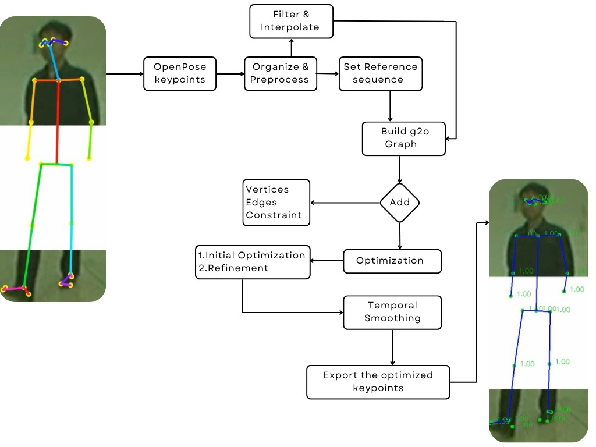

Anatomical-Temporal Pose Refinement using Graph Optimization
we introduce AT-G2O (Anatomical-Temporal Pose Refinement using Graph Optimization), a novel algorithm designed to refine 2D human pose estimations by integrating anatomical and temporal constraints within a graph optimization framework. While existing 2D pose estimation methods often suffer from inconsistencies due to occlusions, noise, or missing data, AT-G2O addresses these challenges by leveraging the structural relationships inherent in the human skeleton and the temporal continuity of motion sequences. HERE IS THE PROSESS STEP
Here describe our algorithm propoerly ===>
AT-G20 Algorithm - OverviewFlowchart of the Algorithm
Stage 1: Data Preprocessing
This initial stage focuses on preparing the raw input data for robust optimization. It involves loading 2D keypoints and their confidence scores from video, performing essential cleaning like filtering out low-confidence points, interpolating missing data, and normalizing keypoint coordinates for consistent processing.
Interactive: Filtering Low-Confidence Keypoints
The bar chart illustrates the confidence scores for a sample of keypoints. Interact with the buttons to observe how filtering removes points that fall below a predefined confidence threshold, significantly improving the quality of the input data for subsequent stages.
Stage 2: Graph-Based Optimization
The core of the pipeline is a powerful two-stage optimization process using the g2o framework. This stage first computes reference bone lengths from a designated sequence, then initializes a graph structure for each non-reference sequence. This graph incorporates joint vertices, temporal edges connecting joints across frames, and skeleton edges enforcing anatomical constraints based on the computed bone lengths. The optimization then iteratively refines the keypoint positions to minimize errors and satisfy all constraints.
Interactive: Building the Optimization Graph
This diagram illustrates the process of building the g2o graph. Click the button to see the steps: first, vertices representing individual joints at specific frames are added. Next, temporal edges connect the same joint across consecutive frames, modeling motion over time. Finally, skeleton constraint edges are added to maintain realistic bone lengths within the human structure.
Stage 3: POST PROCESS & Output
After the g2o optimization, the keypoints are further refined through post-processing steps. This includes applying temporal smoothing, such as a Savitzky-Golay filter, to remove any residual high-frequency jitter and ensure a fluid, natural motion sequence. Finally, the refined 2D keypoints are saved to JSON files, ready for downstream applications like animation or analysis.
Interactive: Smoothing Comparison
The animations below visually compare a skeleton's motion before and after temporal smoothing. Utilize the slider to control the animation playback. Observe how the "jerky" and unstable motion on the left is transformed into a significantly more fluid and natural movement on the right after the filter is applied.